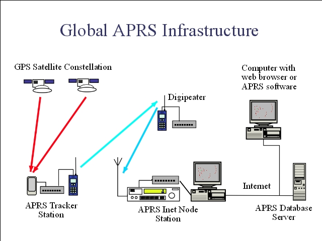

Notes:
APRS signals can also be transfered onto the internet, stored in internet databases, and maps of the position of trackers can be drawn on-the-fly by mapping software at some internet sites (in particular www.findu.com). Networks of digipeaters, internet gateways and database servers comprise a global APRS network.
This global infrastructure is supported by both open source and proprietary software. Open source software exists for database servers, Internet feeds, and mapping capabilitie.